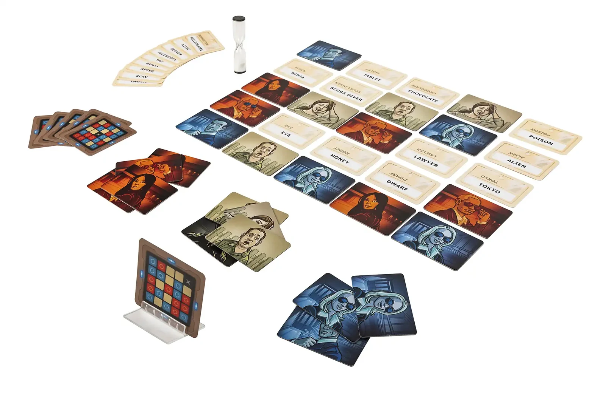
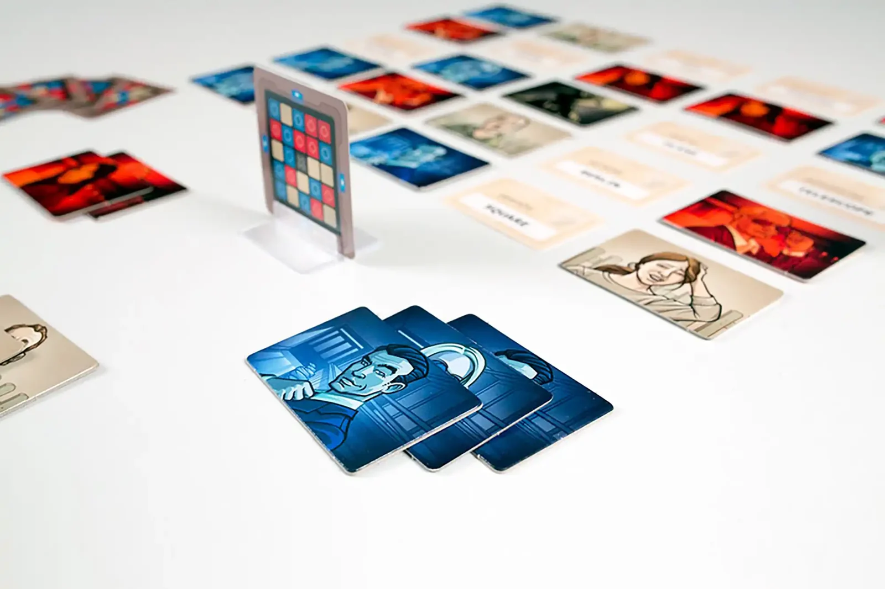
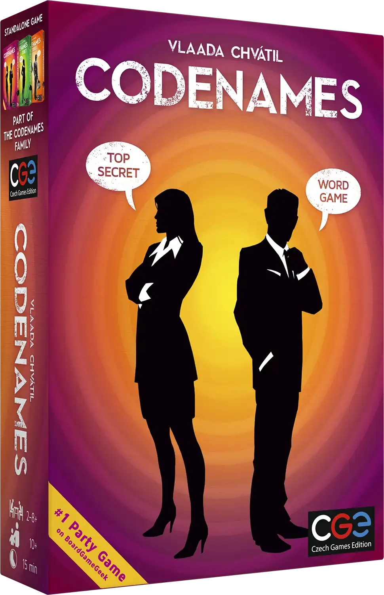
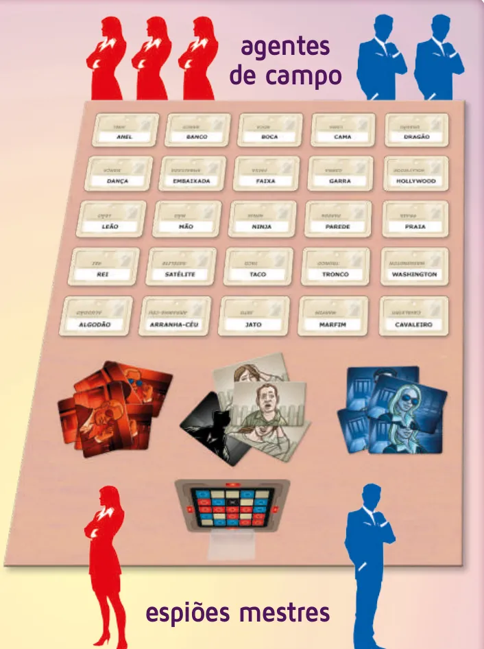
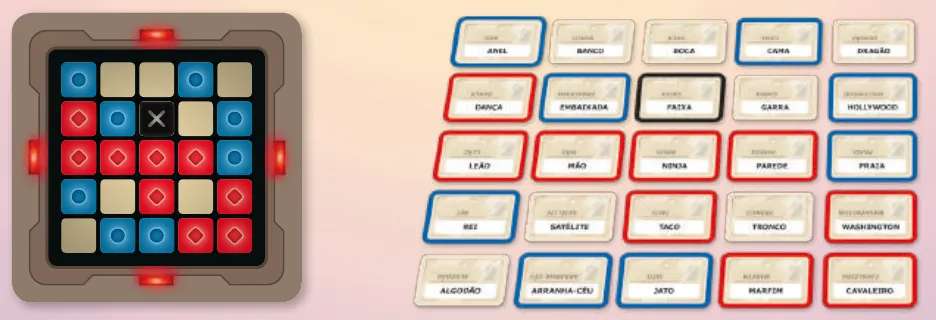
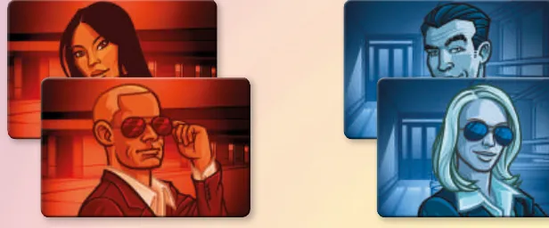
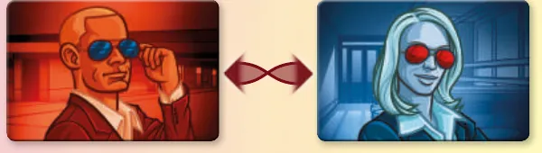
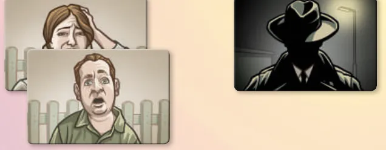

Imagem: Czech Games EditionPalavras · Festa em equipes
Como jogar Código Secreto
Para quem nunca jogou2 a 8 jogadores15 min10+Edição Devir
· Redação Elite Boardgamers
Resumo em 1 minuto
O espião mestre da sua equipe dá pistas de uma palavra e um número, vocês tocam as palavras certas na grade, e vence a equipe que encontrar todas as suas primeiro sem tocar o assassino.
Na sua vez, o espião mestre diz uma palavra e um número, e os agentes de campo podem tocar até o número mais um.
Acertou, continua; civil ou palavra da outra equipe encerram o turno, e o assassino faz a sua equipe perder na hora.
A pista é sobre significado: não pode ser palavra visível na mesa, uma forma dela ou um pedaço dela.
Como você aprende: 3 etapas, da mesa montada à contagem de pontosLeitura do essencial: cerca de 5 min
À vista, só o essencial para jogar. O que abre com + é explicação, exemplo, exercício ou regra de caso especial: abra quando precisar.
Comece a jogar em 4 minutos

Imagem: Czech Games Edition
Meta: em 4 minutos de leitura, montar a mesa e jogar o primeiro turno da sua equipe sem abrir o manual.
A ideia do jogo
Duas equipes, Vermelha e Azul, disputam a mesma grade de 25 palavras. Em cada equipe, um espião mestre sabe, pela carta chave, quais palavras são da equipe dele; os outros jogadores, os agentes de campo, não sabem e tentam tocá-las a partir das pistas dele. Vence a equipe que encontrar todas as suas primeiro, e perde na hora quem tocar o assassinop. 2 e 3.
Monte a mesa
São precisos pelo menos 4 jogadores, duas equipes de dois p. 2. Com 2 ou 3, veja as Situações especiais.
Peças: cartas de codinome (uma palavra cada), cartas chave, o apoio (suporte da carta chave), 8 cartas de agente vermelho, 8 de agente azul, o agente duplo (vermelho de um lado, azul do outro), 7 cartas de civil inocente e 1 do assassino p. 2 e 3.
Divida o grupo em duas equipes de tamanho e habilidade parecidos.
Cada equipe escolhe o seu espião mestre. Os dois sentam do mesmo lado da mesa; os agentes de campo, de frente para eles.
Embaralhe as cartas de codinome e ponha 25 na mesa, numa grade de 5 por 5.
Os espiões mestres sorteiam uma carta chave e a encaixam no apoio entre eles, com qualquer lado para cima. Os agentes de campo não podem vê-la. Cada quadrado da chave é a palavra na mesma posição da grade: azul e vermelho, das equipes; sem cor, civil; preto, assassino.
As quatro luzes nas bordas da carta chave mostram a cor da equipe inicial. Ela tem 9 palavras para encontrar; a outra, 8.
Vire o agente duplo para a cor da equipe inicial e junte-o à pilha de cartas de agente dela. Cada pilha fica na frente do seu espião mestre.
As 7 cartas de civil inocente e a carta do assassino ficam entre os jogadores, onde os dois espiões mestres alcançam.
p. 2 e 3
Seu primeiro turno
A equipe inicial joga primeiro; depois, as equipes se revezam p. 4.
O espião mestre dá a pista: uma palavra e um número (ver nota na etapa 2). A palavra se liga a uma ou mais palavras da equipe; o número diz a quantas p. 4.
A pista não pode estar na mesa. Nem uma forma nem um pedaço de palavra visível; pista inválida encerra o turno (p. 4 a 6).
Os agentes de campo conversam e tocam uma palavra. O toque é a escolha oficial p. 4.
O espião mestre olha a chave e cobre a palavra. Da equipe: carta de agente da equipe, e os agentes de campo podem tocar outra. Civil inocente: carta de civil, e o turno acaba. Da outra equipe: ele a cobre com uma carta de agente da outra equipe, a cor certa, e o turno acaba. Assassino: a equipe que tocou perde, e a outra vence p. 4 e 5.
Quantos toques. Pelo menos um, no máximo o número da pista mais um. Depois do primeiro, podem parar p. 4 e 5.
Ainda não precisa saber
O que vale como pista e o castigo da pista inválida: etapa 3. Cara séria e ampulheta: etapa 2. Variantes para 2 e 3 jogadores: Situações especiais.
Como a partida acaba
Vence a equipe com todas as suas palavras cobertas, mesmo que a última tenha sido tocada pela adversária. Se alguém tocar o assassino, a equipe dele perde p. 5.
Prefere ver? Vídeo de regras da Devir. Ele complementa este guia; em caso de diferença, vale o manual.
DEVIR BRASIL I Código Secreto - regras rápidas, canal Devir TV Brasil · abrir no YouTube
0Antes de tudo: o que é este jogoOpcional

Imagem: Czech Games EditionAbrir esta seção
Código Secreto é um jogo de associação de palavras em equipe. As 25 palavras da mesa são os codinomes de 25 agentes, e por trás de cada um há uma identidade: agente vermelho, agente azul, civil inocente ou o assassino. Só os espiões mestres conhecem essas identidades, porque só eles veem a carta chave p. 2 e 3.
O espião mestre não aponta nem explica: diz uma palavra e um número, e espera. A dificuldade está em achar uma palavra que puxe para várias palavras da equipe e para nenhuma das outras; o manual chama de "grande proeza" ligar quatro com uma pista só p. 4. Cada acerto cobre uma palavra, e a grade fica mais fácil à medida que a partida anda p. 5.
Duas ideias sustentam o resto:
Errar custa de três jeitos. Civil encerra o turno. Palavra da outra equipe encerra o turno e ajuda o adversário. Assassino perde a partida p. 4.
A pista é sobre significado. Ela não pode indicar letras, posição na mesa nem pedaços de palavras visíveis. Parte dessas regras vale sempre, e parte cada grupo combina p. 6 e 7.
1Como este guia ensinaOpcional

Imagem: Czech Games EditionAbrir esta seção
O guia tem três etapas, cada uma uma parte real da partida: montar a mesa, jogar um turno e decidir se uma pista vale. Em cada etapa vêm Para entender (como funciona e por quê), Passo a passo (as regras exatas), um exemplo resolvido, uma tarefa para completar, uma sua vez, sem ajuda, e, nas etapas 2 e 3, um treino rápido. Regras que só aparecem em algumas partidas ficam em blocos de regra adicional, logo depois do passo a passo. Em cada pergunta, escolha uma opção para ver a resposta certa e a explicação. No final, uma avaliação curta diz o que reler, e uma folha de consulta vai para a mesa.
2Etapa 1: montar a mesa
Por que funciona assim

A mesa montada: os agentes de campo de um lado, a grade de 25 codinomes no meio, as pilhas de cartas de agente e as de civil e do assassino abaixo dela, e a carta chave no apoio, virada para os dois espiões mestres. Ilustração: manual Devir p. 2

A carta chave e a grade que ela descreve: cada quadrado vale para a palavra na mesma posição. As luzes vermelhas mostram que a Vermelha começa, com 9 palavras; o X marca o assassino, FAIXA. Ilustração: manual Devir p. 2Regra adicional: Embaralhar bem

As cartas de agente, 8 vermelhas e 8 azuis. Cada pilha fica na frente do seu espião mestre e ajuda a lembrar quem é de qual equipe. Ilustração: manual Devir p. 3

O agente duplo, com uma face vermelha e uma azul, vira para a cor da equipe inicial. Ilustração: manual Devir p. 3

As cartas de civil inocente, 7, e a do assassino, 1, que ficam ao alcance dos dois espiões mestres. Ilustração: manual Devir p. 3Ver um exemplo resolvidoPratique esta etapa: exercícios com respostas
3Etapa 2: dar a pista e adivinhar
Imagem: Czech Games EditionPor que funciona assimSobre a ediçãoRegra adicional: Vencer no turno do adversárioRegra adicional: Cara sériaRegra adicional: AmpulhetaVer um exemplo resolvidoPratique esta etapa: exercícios com respostas
4Etapa 3: o que vale como pista
Imagem: Czech Games EditionPor que funciona assimRegra adicional: Penalidade por pista inválidaRegra adicional: Não seja muito rigorosoRegra adicional: Regras flexíveisRegra adicional: Pista com 0Regra adicional: Pista ilimitadaVer um exemplo resolvidoPratique esta etapa: exercícios com respostas
5Situações especiaisOpcional
Imagem: Czech Games EditionAbrir esta seçãoRegra adicional: Dois jogadoresRegra adicional: Resultado com dois jogadoresSobre a ediçãoRegra adicional: Três jogadoresRegra adicional: Próxima partidaSobre a edição
6Avaliação finalOpcional
Imagem: Czech Games EditionAbrir esta seção
Responda sem consultar. Cada resposta diz o que reler.
1. Quem decide qual equipe começa?
As luzes da carta chave mostram a equipe inicial, que tem 9 palavras p. 3. Releia a etapa 1.
2. A pista foi frio: 2, e os agentes de campo acertaram duas. O que podem fazer?
Mais uma, ou parar. O máximo é o número mais um p. 5. Releia a etapa 2.
3. A Azul tem 1 palavra por achar. No turno da Vermelha, um agente vermelho toca essa palavra. O que acontece?
A Azul vence: todas as palavras dela estão cobertas, e é possível vencer no turno da outra equipe p. 5. Releia a etapa 2.
4. CAVALEIRO está descoberta. O espião mestre diz cavaleiros: 2. A pista vale pelas regras rigorosas?
Não vale. Não se pode usar nenhuma forma de uma palavra visível na mesa p. 6. Releia a etapa 3.
5. O espião mestre dá uma pista inválida, e o adversário percebe. O que acontece?
O turno acaba, com a penalidade da cobertura p. 5. Releia a etapa 3.
7Para consultar durante a partida
Imagem: Czech Games Edition
Preparação: duas equipes, pelo menos 4 jogadores. Espiões mestres do mesmo lado; agentes de campo de frente. Grade de 5 por 5 codinomes. Carta chave no apoio, escondida dos agentes de campo. Luzes da chave: equipe inicial, com 9 palavras (8 cartas de agente mais o agente duplo); a outra tem 8. Civis (7) e assassino (1) no meio.
O turno
Espião mestre: uma palavra e um número (ver nota na etapa 2).
Agentes de campo: discutem e tocam. Pelo menos 1 toque; no máximo o número mais 1.
Da equipe: carta da equipe, continua. Civil: carta de civil, fim do turno. Da outra equipe: carta da outra equipe, fim do turno. Assassino: a equipe perde, e a outra vence.
Podem parar depois do primeiro toque.
Pista válida: uma palavra; sobre o significado; nunca palavra visível, forma dela ou parte de composta visível; o número não é pista; em português; mesma grafia é a mesma palavra; soletrar se pedirem.
Pista inválida: fim do turno, e o espião mestre adversário pode cobrir uma palavra da própria equipe antes da próxima pista. Se ninguém notar, vale.
Combinar antes: siglas, palavras compostas, homônimos, rimas, nomes próprios de várias palavras.
Pistas especiais: 0 e ilimitado: toques sem limite, pelo menos 1.
Fim: vence a equipe com todas as palavras cobertas, mesmo no turno da outra. Tocou o assassino, perdeu.